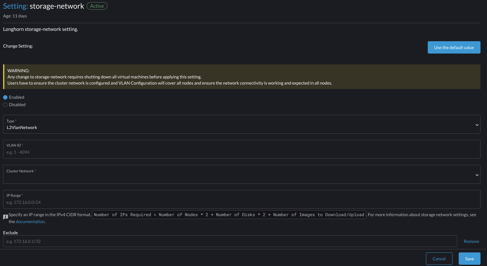

Réseau de stockage
SUSE Virtualization utilise SUSE Storage pour fournir des volumes de périphériques de bloc pour les machines virtuelles et les pods. Si vous souhaitez isoler le trafic de réplication de SUSE Storage du réseau de cluster intégré mgmt ou d’autres charges de travail à l’échelle du cluster, vous pouvez utiliser un réseau de stockage dédié pour une meilleure bande passante et performance réseau.
Pour plus d’informations, voir Réseau de stockage dans la documentation SUSE Storage.
|
Évitez de configurer directement les paramètres de SUSE Storage, car cela peut entraîner un comportement système inattendu ou indésirable. |
Conditions préalables
Avant de commencer à configurer le réseau de stockage, assurez-vous que les exigences suivantes sont remplies :
-
Les commutateurs réseau sont correctement configurés et un ID VLAN dédié est attribué au réseau de stockage.
-
Le réseau de cluster et le réseau VLAN sont configurés correctement. Assurez-vous que les deux réseaux couvrent tous les nœuds et sont accessibles.
-
La plage IP du réseau de stockage a les caractéristiques suivantes :
-
Utilise le format CIDR IPv4
-
N’entre pas en conflit et ne chevauche pas les réseaux de cluster Kubernetes
Les adresses suivantes sont réservées :
10.42.0.0/16,10.43.0.0/16,10.52.0.0/16et10.53.0.0/16. -
Couvre les exigences du cluster
Le nombre requis d’adresses IP est calculé à l’aide de la formule suivante :
Required number of IPs = (Number of nodes * 2) + (Number of disks * 2) + Number of images to be downloaded or uploadedExemple : Si un cluster a cinq nœuds avec deux disques chacun, et que dix images doivent être téléversées simultanément, la plage IP doit être supérieure ou égale à
/26(calcul : (5 x 2) + (5 x 2) + 10 = 30). -
Exclut les adresses IP que SUSE Storage les pods et le réseau de stockage ne doivent pas utiliser, telles que les adresses réservées pour volumes RWX, la passerelle et d’autres composants.
-
-
Le CNI Whereabouts est installé correctement.
Vous pouvez vérifier si le CRD
ippools.whereabouts.cni.cncf.ioexiste dans le cluster en utilisant la commandekubectl get crd ippools.whereabouts.cni.cncf.io.Si une chaîne vide est renvoyée, ajoutez les CRDs dans ce répertoire en utilisant les commandes suivantes :
kubectl apply -f https://raw.githubusercontent.com/harvester/harvester/v1.1.0/deploy/charts/harvester/dependency_charts/whereabouts/crds/whereabouts.cni.cncf.io_ippools.yaml kubectl apply -f https://raw.githubusercontent.com/harvester/harvester/v1.1.0/deploy/charts/harvester/dependency_charts/whereabouts/crds/whereabouts.cni.cncf.io_overlappingrangeipreservations.yamlLe CNI Whereabouts n’est pas installé correctement dans certains scénarios de mise à niveau.
-
Toutes les machines virtuelles sont arrêtées.
Vous pouvez vérifier l’état des machines virtuelles en utilisant la commande
kubectl get -A vmi, qui devrait renvoyer une chaîne vide.SUSE Virtualization envoie un signal d’arrêt gracieux aux machines virtuelles qui sont arrêtées via l’interface utilisateur SUSE Virtualization. Cependant, les charges de travail sont interrompues et restent indisponibles jusqu’à ce que vous démarriez manuellement les machines virtuelles après avoir confirmé que la configuration du réseau de stockage a été appliquée avec succès.
-
Tous les pods attachés aux volumes SUSE Storage sont arrêtés.
-
Tous les téléchargements et téléversements d’images en cours sont soit terminés, soit supprimés.
SUSE Storage Routage du trafic de réplication
Le routage du SUSE Storage trafic de réplication dépend de si le trafic VLAN des machines virtuelles et le SUSE Storage réseau de stockage partagent les mêmes interfaces physiques ou utilisent des interfaces différentes.
-
Mêmes interfaces physiques : Dans l’exemple suivant,
eth2eteth3sont utilisés pour le trafic VLAN des machines virtuelles et le SUSE Storage réseau de stockage. La ligne rouge indique que SUSE Storage envoie le trafic de réplication viaeth3.
Vous devez inclure
eth2eteth3dans la configuration du réseau de cluster et du réseau VLAN. -
Interfaces physiques différentes : Dans l’exemple suivant,
eth2eteth3sont utilisés pour le trafic VLAN des machines virtuelles, tandis queeth4eteth5sont utilisés pour le réseau de stockage SUSE Storage. La ligne rouge indique que SUSE Storage envoie le trafic de réplication viaeth4.
Vous devez inclure
eth4eteth5dans la configuration du réseau de cluster et du réseau VLAN.
storage-network Paramètre
Le paramètre storage-network vous permet de configurer le réseau utilisé pour isoler le trafic de stockage intra-cluster lorsque la séparation est requise.
Vous pouvez activer et désactiver le réseau de stockage en utilisant soit l’interface utilisateur, soit l’interface en ligne de commande. Lorsque le paramètre est activé, vous devez construire un CRD Multus NetworkAttachmentDefinition en configurant certains champs.
Une fois le paramètre storage-network appliqué, SUSE Virtualization effectue les actions suivantes :
-
Arrête tous les pods liés aux volumes SUSE Storage, Prometheus, Grafana, Alertmanager et au contrôleur d’importation de VM.
-
Crée un nouveau
NetworkAttachmentDefinitionet met à jour le SUSE Storage paramètre de réseau de stockage. -
Redémarre tous les pods
instance-manageretbacking-image-managerpour appliquer la nouvelle configuration réseau.
Étapes de configuration
-
UI
-
CLI
|
Il est fortement recommandé d’utiliser SUSE Virtualization l’interface utilisateur pour configurer le |
==== Activer le réseau de stockage
-
Allez à Paramètres avancés → réseau de stockage →.
-
Sélectionnez Activé.
-
Configurez les champs ID VLAN, Réseau de cluster, Plage IP et Exclure pour construire un CRD Multus
NetworkAttachmentDefinition. -
Cliquez sur Enregistrer.

==== Désactiver le réseau de stockage
-
Allez à Paramètres avancés → réseau de stockage →.
-
Sélectionnez Désactiver.
-
Cliquez sur Enregistrer.
Une fois le réseau de stockage désactivé, SUSE Storage commence à utiliser le réseau de pods pour les opérations liées au stockage.

Vous pouvez utiliser la commande suivante pour configurer le paramètre storage-network.
kubectl edit settings.harvesterhci.io storage-networkLe réseau de stockage est automatiquement activé dans les situations suivantes :
-
Le champ
valuecontient une chaîne JSON valide.apiVersion: harvesterhci.io/v1beta1 kind: Setting metadata: name: storage-network value: '{"vlan":100,"clusterNetwork":"storage","range":"192.168.0.0/24", "exclude":["192.168.0.100/32"]}' -
Le champ
valueest vide.apiVersion: harvesterhci.io/v1beta1 kind: Setting metadata: name: storage-network value: ''
Le réseau de stockage est désactivé lorsque vous retirez le champ value.
apiVersion: harvesterhci.io/v1beta1
kind: Setting
metadata:
name: storage-network|
SUSE Virtualization considère les caractères insignifiants supplémentaires dans une chaîne JSON comme une configuration différente. |
Étapes de post-configuration
|
SUSE Virtualization ne démarre pas les machines virtuelles automatiquement. Vous devez vous assurer que la configuration est correcte et appliquée avec succès, puis démarrer les machines virtuelles si nécessaire. |
-
Vérifiez que le statut du paramètre
storage-networkestTrueet que le type estconfigureden utilisant la commande suivante :kubectl get settings.harvesterhci.io storage-network -o yamlExemple :
apiVersion: harvesterhci.io/v1beta1 kind: Setting metadata: annotations: storage-network.settings.harvesterhci.io/hash: da39a3ee5e6b4b0d3255bfef95601890afd80709 storage-network.settings.harvesterhci.io/net-attach-def: "" storage-network.settings.harvesterhci.io/old-net-attach-def: "" creationTimestamp: "2022-10-13T06:36:39Z" generation: 51 name: storage-network resourceVersion: "154638" uid: 2233ad63-ee52-45f6-a79c-147e48fc88db status: conditions: - lastUpdateTime: "2022-10-13T13:05:17Z" reason: Completed status: "True" type: configured -
Vérifiez que les pods SUSE Storage (
instance-manageretbacking-image-manager) sont prêts et que leurs réseaux sont correctement configurés.Vous pouvez inspecter chaque pod en utilisant la commande suivante :
kubectl -n longhorn-system describe pod <pod-name>Des erreurs similaires à celles-ci indiquent que le réseau de stockage a épuisé ses adresses IP disponibles. Vous devez reconfigurer le réseau de stockage avec une plage d’IP suffisante.
Events: Type Reason Age From Message ---- ------ ---- ---- ------- .... Warning FailedCreatePodSandBox 2m58s kubelet Failed to create pod sandbox: rpc error: code = Unknown desc = failed to setup network for sandbox "04e9bc160c4f1da612e2bb52dadc86702817ac557e641a3b07b7c4a340c9fc48": plugin type="multus" name="multus-cni-network" failed (add): [longhorn-system/backing-image-ds-default-image-lxq7r/7d6995ee-60a6-4f67-b9ea-246a73a4df54:storagenetwork-sdfg8]: error adding container to network "storagenetwork-sdfg8": error at storage engine: Could not allocate IP in range: ip: 172.16.0.1 / - 172.16.0.6 / range: net.IPNet{IP:net.IP{0xac, 0x10, 0x0, 0x0}, Mask:net.IPMask{0xff, 0xff, 0xff, 0xf8}} ....Si le réseau de stockage a épuisé ses adresses IP disponibles, vous pourriez rencontrer des erreurs similaires lorsque vous téléchargez ou téléversez des images. Vous devez supprimer les images affectées et reconfigurer le réseau de stockage avec une plage d’IP suffisante.
-
Vérifiez qu’une interface nommée
lhnet1existe dans les annotationsk8s.v1.cni.cncf.io/network-status. L’adresse IP de cette interface doit être dans la plage d’IP désignée.Vous pouvez récupérer une liste de SUSE Storage
instance-managerpods en utilisant la commande suivante :kubectl get pods -n longhorn-system -l longhorn.io/component=instance-manager -o yamlExemple :
apiVersion: v1 kind: Pod metadata: annotations: cni.projectcalico.org/containerID: 2518b0696f6635896645b5546417447843e14208525d3c19d7ec6d7296cc13cd cni.projectcalico.org/podIP: 10.52.2.122/32 cni.projectcalico.org/podIPs: 10.52.2.122/32 k8s.v1.cni.cncf.io/network-status: |- [{ "name": "k8s-pod-network", "ips": [ "10.52.2.122" ], "default": true, "dns": {} },{ "name": "harvester-system/storagenetwork-95bj4", "interface": "lhnet1", "ips": [ "192.168.0.3" ], "mac": "2e:51:e6:31:96:40", "dns": {} }] k8s.v1.cni.cncf.io/networks: '[{"namespace": "harvester-system", "name": "storagenetwork-95bj4", "interface": "lhnet1"}]' k8s.v1.cni.cncf.io/networks-status: |- [{ "name": "k8s-pod-network", "ips": [ "10.52.2.122" ], "default": true, "dns": {} },{ "name": "harvester-system/storagenetwork-95bj4", "interface": "lhnet1", "ips": [ "192.168.0.3" ], "mac": "2e:51:e6:31:96:40", "dns": {} }] kubernetes.io/psp: global-unrestricted-psp longhorn.io/last-applied-tolerations: '[{"key":"kubevirt.io/drain","operator":"Exists","effect":"NoSchedule"}]' Omitted... -
Testez la communication entre les SUSE Storage pods.
Le réseau de stockage est dédié à la communication interne entre les SUSE Storage pods, ce qui entraîne des performances et une fiabilité élevées. Cependant, le réseau de stockage dépend toujours de l’infrastructure réseau externe pour la connectivité (similaire à la façon dont le réseau VLAN des VM fonctionne). Lorsque le réseau externe n’est pas connecté et configuré correctement, vous pouvez rencontrer les problèmes suivants :
-
La machine virtuelle nouvellement créée reste bloquée à l’état
Not-Ready. -
Les journaux du pod
longhorn-managercontiennent des messages d’erreur.Exemple :
longhorn-manager-j6dhh/longhorn-manager.log:2024-03-20T16:25:24.662251001Z time="2024-03-20T16:25:24Z" level=error msg="Failed rebuilding of replica 10.0.16.26:10000" controller=longhorn-engine engine=pvc-0a151c59-ffa9-4938-9c86-59ebb296bc88-e-c2a7fe77 error="proxyServer=10.52.6.33:8501 destination=10.0.16.23:10000: failed to add replica tcp://10.0.16.26:10000 for volume: rpc error: code = Unknown desc = failed to get replica 10.0.16.26:10000: rpc error: code = Unavailable desc = all SubConns are in TransientFailure, latest connection error: connection error: desc = \"transport: Error while dialing dial tcp 10.0.16.26:10000: connect: no route to host\"" node=oml-harvester-9 volume=pvc-0a151c59-ffa9-4938-9c86-59ebb296bc88Pour tester la communication entre les SUSE Storage pods, effectuez les étapes suivantes :
-
Obtenez l’adresse IP du réseau de stockage de chaque pod Instance Manager (un par nœud) identifié à l’étape précédente.
Exemple :
instance-manager-43f1624d14076e1d95cd72371f0316e2 storage network IP: 10.0.16.8 instance-manager-ba38771e483008ce61249acf9948322f storage network IP: 10.0.16.14 -
Connectez-vous à ces pods.
Lorsque vous exécutez la commande
ip addr, la sortie inclut des adresses IP identiques à celles des annotations du pod. Dans l’exemple suivant, une adresse IP est pour le réseau de pods, tandis que l’autre est pour le réseau de stockage.Exemple :
$ kubectl exec -i -t -n longhorn-system instance-manager-ba38771e483008ce61249acf9948322f -- /bin/sh $ ip addr 1: lo: <LOOPBACK,UP,LOWER_UP> mtu 65536 qdisc noqueue state UNKNOWN group default qlen 1000 link/loopback 00:00:00:00:00:00 brd 00:00:00:00:00:00 inet 127.0.0.1/8 scope host lo ... 3: eth0@if2277: <BROADCAST,MULTICAST,UP,LOWER_UP> mtu 1450 qdisc noqueue state UP group default // pod network link link/ether 0e:7c:d6:77:44:72 brd ff:ff:ff:ff:ff:ff link-netnsid 0 inet 10.52.6.146/32 scope global eth0 ... 4: lhnet1@if2278: <BROADCAST,MULTICAST,UP,LOWER_UP> mtu 1500 qdisc noqueue state UP group default // storage network link, note the MTU value link/ether fe:92:4f:fb:dd:20 brd ff:ff:ff:ff:ff:ff link-netnsid 0 inet 10.0.16.14/20 brd 10.0.31.255 scope global lhnet1 ... $ ip route default via 169.254.1.1 dev eth0 10.0.16.0/20 dev lhnet1 proto kernel scope link src 10.0.16.14 169.254.1.1 dev eth0 scope linkLe lien du réseau de stockage hérite toujours de la valeur MTU du réseau de cluster attaché, indépendamment de la valeur MTU configurée.
-
Démarrez un serveur HTTP simple dans un pod.
Vous devez explicitement lier ce serveur HTTP à l’adresse IP du réseau de stockage.
Exemple :
$ python3 -m http.server 8000 --bind 10.0.16.14 (replace with your pod storage network IP) -
Testez le serveur HTTP dans un autre pod.
Exemple :
From instance-manager-43f1624d14076e1d95cd72371f0316e2 (IP 10.0.16.8) $ curl http://10.0.16.14:8000Lorsque le réseau de stockage fonctionne correctement, la commande
curlrenvoie une liste de fichiers sur le serveur HTTP. -
(Optionnel) Résoudre les problèmes.
Le réseau de stockage peut mal fonctionner en raison de problèmes avec le réseau externe, tels que les suivants :
-
Les NIC physiques (installés sur SUSE Virtualization nœuds) associés au réseau de stockage n’ont pas été ajoutés au même VLAN dans les commutateurs externes.
-
Les commutateurs externes ne sont pas correctement connectés et configurés.
-
-
-
Une fois la configuration vérifiée, vous pouvez démarrer manuellement des machines virtuelles si nécessaire.
Meilleures pratiques
-
Lors de la configuration d’une plage d’adresses IP pour le réseau de stockage, assurez-vous que les adresses IP allouées peuvent répondre aux besoins futurs du cluster. C’est important car les pods SUSE Storage (
instance-manageretbacking-image-manager) cessent de fonctionner lorsque de nouveaux nœuds sont ajoutés au cluster ou que plus de disques sont ajoutés à un nœud après la configuration du réseau de stockage, et lorsque le nombre requis d’adresses IP dépasse les adresses IP allouées. Résoudre le problème implique de reconfigurer le réseau de stockage avec la plage d’adresses IP correcte.SUSE Storage pods utilisent le réseau de stockage comme suit :
-
instance-managerpods : Les composants du gestionnaire d’instances ont été consolidés dans SUSE Storage v1.5.0. Chaque nœud nécessite une adresse IP. Lors d’une mise à niveau, les anciennes et nouvelles versions de ces pods existent, et l’ancienne version est supprimée une fois la mise à niveau terminée. -
backing-image-dspods : Ces pods traitent les téléversements et les téléchargements d’images de données sources à la volée, et sont supprimés une fois que les téléversements et les téléchargements d’images sont terminés. -
backing-image-managerpods : Chaque disque nécessite une adresse IP. Lors d’une mise à niveau, les anciennes et nouvelles versions de ces pods existent, et l’ancienne version est supprimée une fois la mise à niveau terminée.
-
-
Configurez le réseau de stockage sur un réseau de cluster non-
mgmtpour garantir une séparation complète du trafic de réplication SUSE Storage du trafic du plan de contrôle Kubernetes. Utilisermgmtest possible mais pas recommandé en raison de l’impact négatif (concurrence des ressources et de la bande passante) sur les performances du réseau du plan de contrôle. Utilisezmgmtuniquement si votre cluster a des contraintes liées aux NIC et si vous pouvez complètement séparer le trafic.